Cumplelolero · hoy, 5 oct de 2011
XERATH15 AÑOS
El Mago Ascendente
Shurima
El adecé del meta de magos
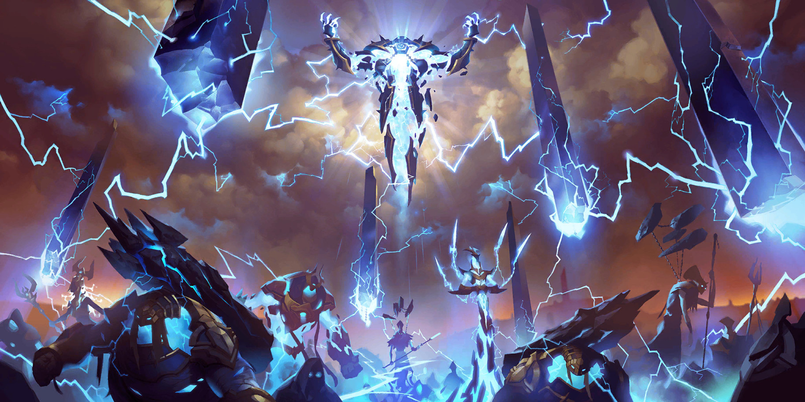
Te mataba
sin que lo vieras
Y el favorito de los scripters
En el video de Nasus

Renekton arrastró a un mago
hasta la Tumba de los Emperadores
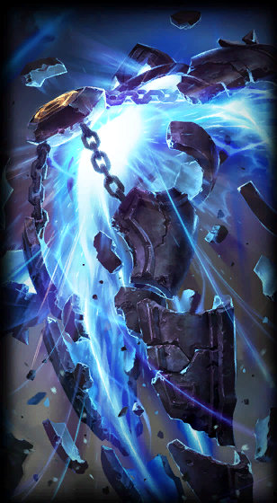
Ese mago
es este
cabrón
Hijo de dos eruditos capturados
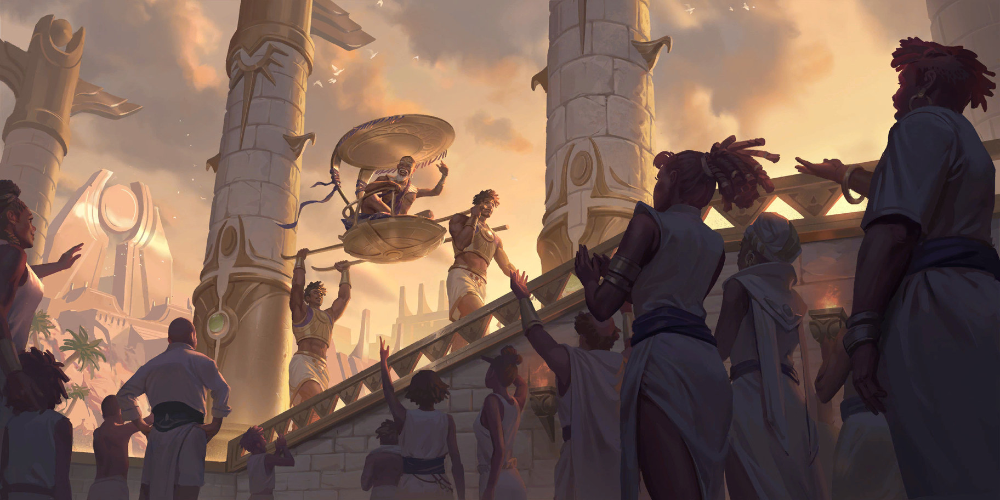
Nació esclavo.
Y sin nombre.
A su papá
lo dejaron tullido por un monumento al caballo del emperador
A su mamá
no la volvió a ver nunca
De aprendiz, todos los días
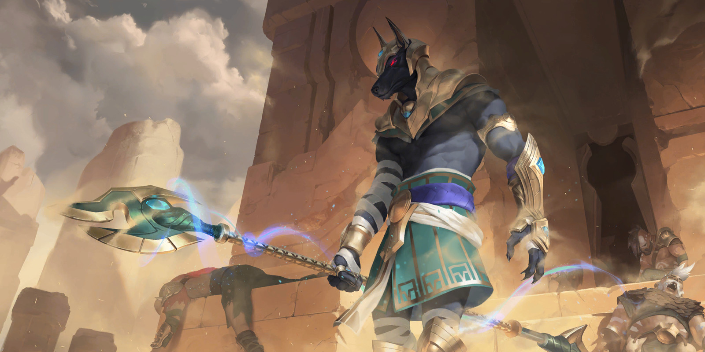
Lo mandaban
a la biblioteca
de Nasus
Y ahí un chavo no entendía un texto
El hijo menos querido del emperador
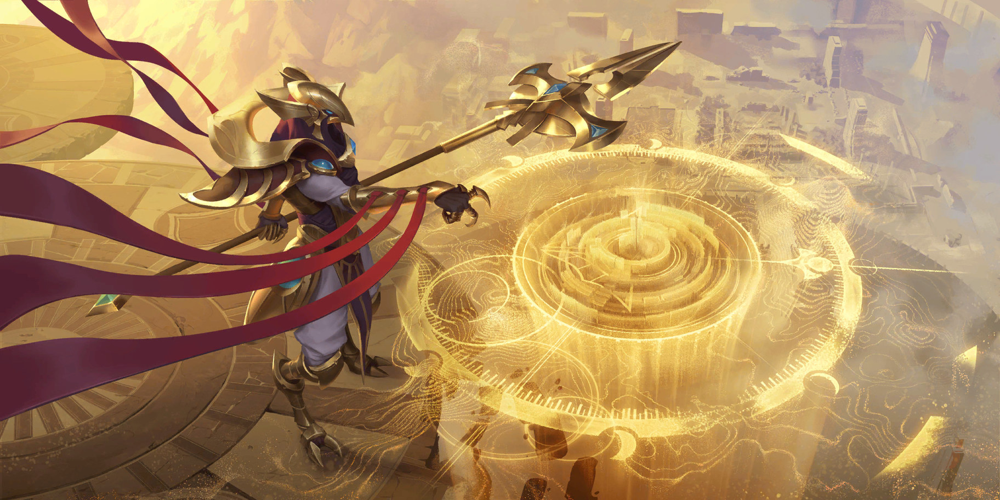
Era Azir
Hablarle a la realeza se pagaba con la muerte.
Se paró a ayudarlo.
Los esclavos no tenían nombre
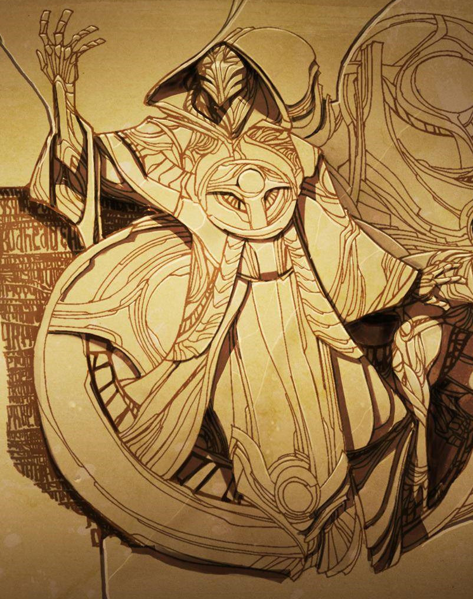
Azir le puso uno
Xerath
«El que comparte»
Y le prometió que algún día
serían hermanos
Para que Azir siguiera vivo
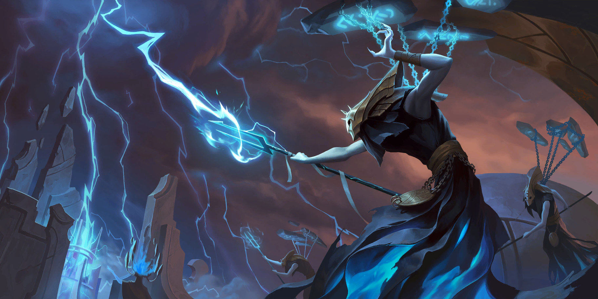
Los bebés de la reina,
antes de nacer
Al príncipe y a la reina, a rayos.
Al emperador, lo incineró.
Coronaron a Azir
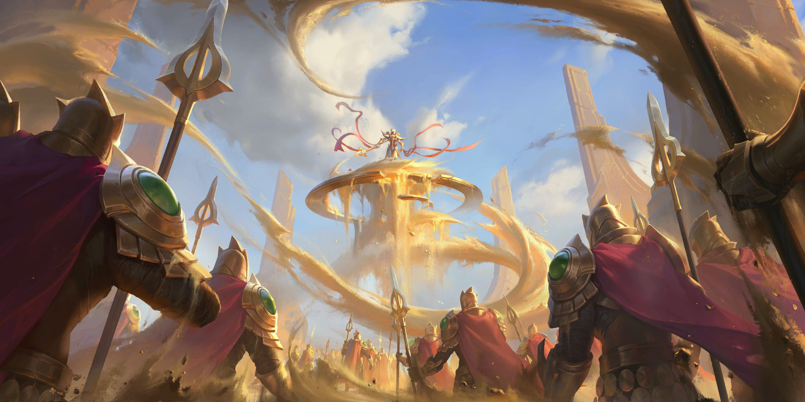
Esperaba su libertad
y ser su hermano
No recibió
ninguna
ninguna
«Eres un esclavo. No olvides de dónde vienes.»
El lore lo dice así
«La parte honrada
de Xerath
murió ese día»
Segundos antes del ritual
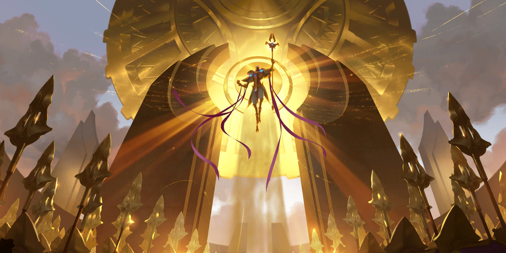
Azir se dio
la vuelta
«Eres un hombre libre»
«Todos los esclavos de Shurima, libres»
«Mi hermano eterno»
Le dieron todo lo que quería
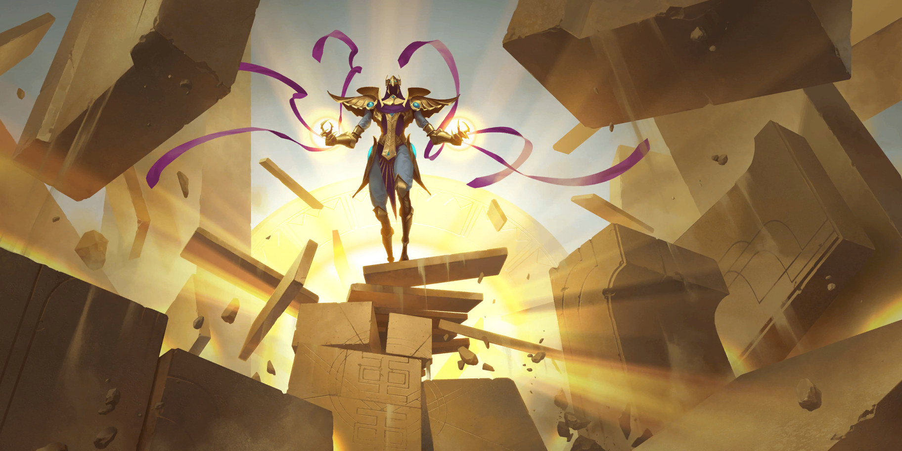
Y lo mató
de todos modos
Textual de su biografía
«Contempló a través de lágrimas cómo su antiguo amigo ardía hasta convertirse en ceniza»
Y el poder no era para él
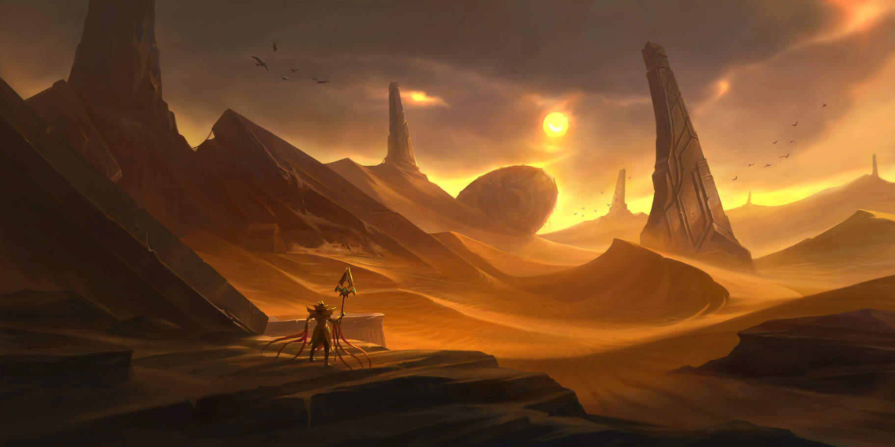
El desierto
se tragó Shurima
Un imperio de generaciones, en un día
Para los que vieron el de Nasus
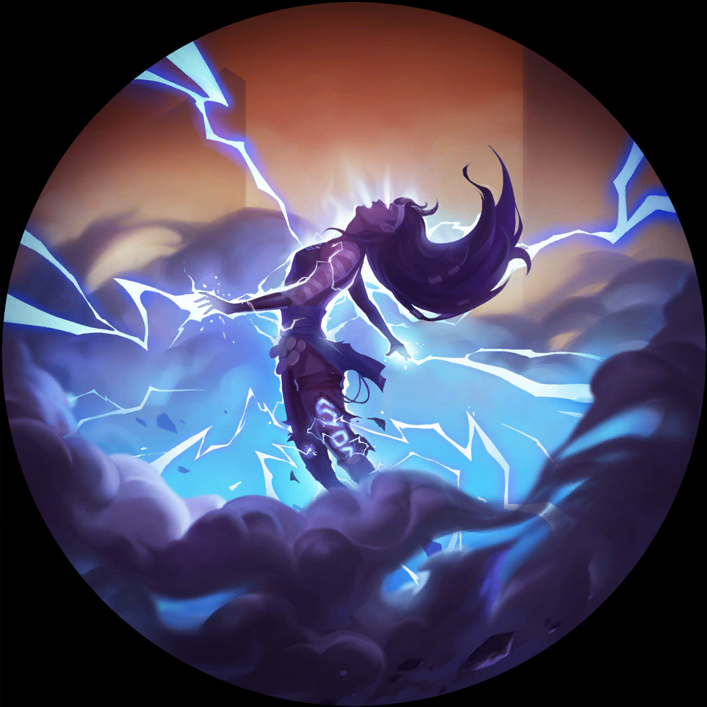
Lo metieron a un sarcófago
y lo hizo pedazos
Por eso trae los fragmentos y las cadenas.
Y en la tumba, Renekton se metió con él.
Siglos encerrados juntos
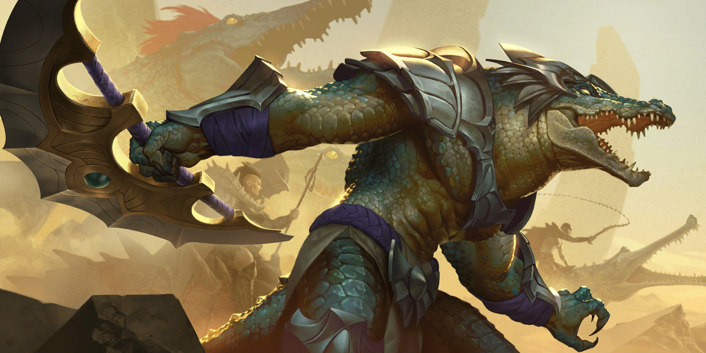
No fue el tormento.
Fue Xerath al oído
Textual de su biografía
«Retorció la mente de Renekton y la llenó de un rencor inmerecido hacia Nasus»
El número uno del mundo
赤富士peercast
Japón
9 904 026
puntos de maestría
DIAMANTE 4
Pico de la temporada · Diamante 2
Quince años del Mago Ascendente
Feliz cumpleaños,
Xerath
GIGI EASY
Tírenme un follow o les voy a meter la cuarta. Chao.